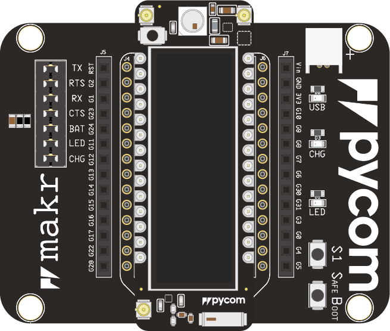

Welcome to the getting started guide for your device! In the following guide, we will explain the basic process to get started using your Pycom products.
In the first part of this getting started guide, we will take you through setting up your device. Firstly we will cover how to connect the module to your computer via USB.
This step works the same for all our development boards and expansion boards. Insert your development board (Lopy, Wipy, etc.) into the expansion board (Pytrack, Pysense, Expansion board etc.) with the reset button and RGB LED above the USB connector like shown below. Connect an USB cable to the USB port and your computer. Now, you can talk to your device through USB, but we still need some software to upload your first program!

Note: If you do not have an expansion board, you are able to use a USB-Serial converter to connect or the Pybytes App to provision your device to Pybytes.
Now that your module is successfully connected, you will need to install some software on your computer to interface with it. For this, we use Pymakr, a plugin for both Visual Studio Code and Atom IDE. Through either one of the environments, we can connect to the board and talk Python!
Follow the link below for the installation instructions:
Once you have installed and opened the IDE, the board should automatically show up in the terminal. If not, check if any of your other plugins are in conflict. If everything is correct, the REPL (Read Evaluate Print Loop) terminal will show the classic Python >>>.
Note: If your device does not get recognized the first time on Windows, check if you need additional drivers
Now that you have connected your device and installed Pymakr, it is time to begin programming your device!
If you have any experience with python, you know that the >>> means we can start typing commands! Type the following commands in the REPL terminal:
>>> import pycom
>>> pycom.heartbeat(False)
>>> pycom.rgbled(0x330033)
This will turn the RGB LED on your device purple! Notice that the REPL does not give any feedback. Only when we make a mistake, or ask it to return something will it give us a response.
In this first project, we will make the on-board RGB LED flash different colors.
RGB-Blink.lib folder for additional libraries, and two python files: main.py and boot.py.
main.py This script runs directly after boot.py and should contain the main code you wish to run on your device.boot.py This is the first script that runs on your module when it turns on. This is often used to connect a module to a network without cluttering up the main.py file. As a beginner you generally do not need to use a boot.py.lib directory and put the library files in this. It is important that you put .py files directly into lib rather than creating a directory tree. For example, the extra sensor libraries for the Pytrack, Pysense and Pyscan are put in this folder. In this example, we will not use it.Now that you have setup and configured your project, we can move on to programming your module. The first thing we will need to do is import some libraries in order to interact with the on-board LED. The Pycom firmware comes with a large amount of built-in modules. You can find out more about these in the API documentation. For this example you will need to open the main.py file and add the following code:
import pycom
import time
This will import two libraries, pycom which is responsible for Pycom specific features, such as the on-board LED and time which is a standard library used for timing and delays.
You may have noticed that when you power up your Pycom module, the on-board LED blinks blue on a regular basis. This “heartbeat” is used as a way of know that your module has powered up and started correctly.
Before we can change the colour of this LED we need to disable this heart beat. Below your imports you will need to add the following:
pycom.heartbeat(False)
Now it’s time to test your code. On the Pymakr pane, you will see a run button, but als an upload (to device) button. For now, we will use run.
After running the example code above, you should see that that on-board LED stops blinking blue. Now, we can complete our script to blink the LED like so:
import pycom
import time
pycom.heartbeat(False)
while True:
#colors in hexadecimal (0xRRGGBB)
pycom.rgbled(0xFF0000) # Red
time.sleep(1)
pycom.rgbled(0x00FF00) # Green
time.sleep(1)
pycom.rgbled(0x0000FF) # Blue
time.sleep(1)
Once you run the above script, it will run forever (due to the infinite While-loop). In order to stop the script, click onto the Pymakr terminal, and press ctrl-c on your keyboard. This stops the script and returns to the interactive REPL.
Great work, the RGB-LED on your device should now blink in red, green and blue
In the previous section we got code running on on your Pycom module using the run feature of Pymakr. This is useful for quick testing but has a couple of drawbacks. Firstly the code does not remain on the device permanently. If you reboot the device, it will no longer be running your code. Secondly, it will only work if you are using libraries built into the firmware. If you need any extra libraries, these need to be copied to the device first. This is where the upload feature comes in. If instead of run you click upload, Pymakr will upload all the files in the project. These then persist on your device even between reboots, and allows you to use libraries from the lib folder in your project.
From here on, you can continue to use the additional features of your expansionboard:
Note The Expansionboard requires no additional libraries and all functions work out of the box!
| Pygate | Pysense | Pysense 2.0 X | Pytrack | Pytrack 2.0 X | PyScan |
|---|---|---|---|---|---|
| WiFi | LoRa | SigFox | BLE | LTE | Ethernet |
|---|
Now that we got the basic example running, you can continue with the links below.